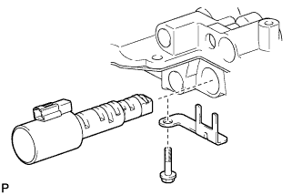
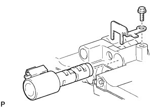

КОРПУС КЛАПАНОВ В СБОРЕ > ПОВТОРНАЯ СБОРКА |
| 1. УСТАНОВИТЕ ЭЛЕКТРОМАГНИТНЫЙ КЛАПАН ПЕРЕКЛЮЧЕНИЯ ПЕРЕДАЧ SLT |
|  |
Закрепите электромагнитный клапан переключения передач SLT с помощью стопорной пластины электромагнитного клапана и болта.
| 2. УСТАНОВИТЕ ЭЛЕКТРОМАГНИТНЫЙ КЛАПАН ПЕРЕКЛЮЧЕНИЯ ПЕРЕДАЧ SLU |
|  |
Закрепите электромагнитный клапан переключения передач SLU с помощью стопорной пластины электромагнитного клапана и болта.
| 3. УСТАНОВИТЕ ЭЛЕКТРОМАГНИТНЫЙ КЛАПАН ПЕРЕКЛЮЧЕНИЯ ПЕРЕДАЧ S1 |
Покройте новое кольцевое уплотнение ATF и установите его на электромагнитный клапан переключения передач S1.
| *1 | Новое кольцевое уплотнение |
Установите электромагнитный клапан переключения передач S1.
| 4. УСТАНОВИТЕ ЭЛЕКТРОМАГНИТНЫЙ КЛАПАН ПЕРЕКЛЮЧЕНИЯ ПЕРЕДАЧ S2 |
Покройте новое кольцевое уплотнение ATF и установите его на электромагнитный клапан переключения передач S2.
| *1 | Новое кольцевое уплотнение |
Установите электромагнитный клапан переключения передач S2 и закрепите его болтом.